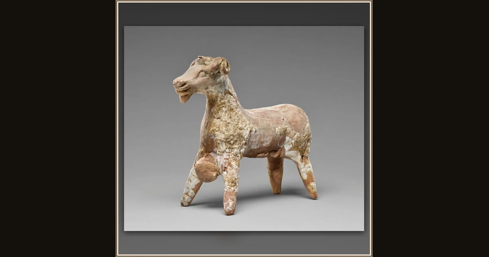

Statuette of Odysseus under a Ram
Greek (Sicilian) (unknown maker) · 525–500 B.C. · The J. Paul Getty Museum · Los Angeles, USA
This ancient clay figure shows Odysseus clinging beneath a ram — the daring escape he made from the blinded Cyclops’s cave. Explore its place in Book IX of the Odyssey.